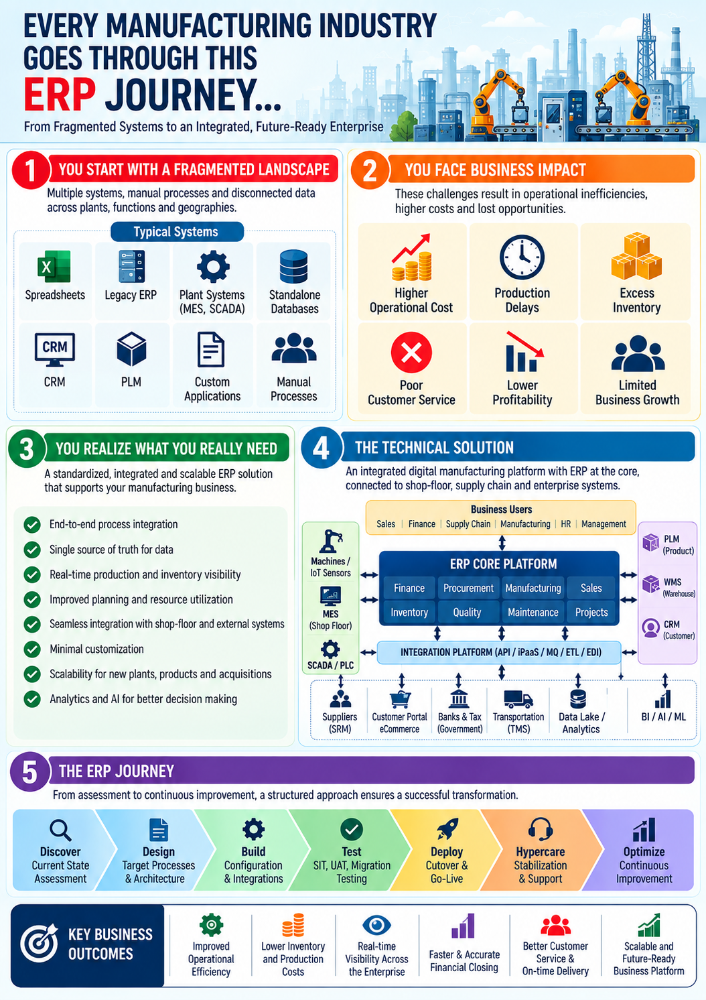

MANUFACTURING • ERP TRANSFORMATION
Manufacturing ERP Transformation with SAP as the Single Source of Truth
SAP S/4HANA • Manufacturing • Supply Chain • Finance • Procurement • Sales • Warehouse

Representative manufacturing ERP landscape showing SAP S/4HANA
as the enterprise system of record and integration point for
end-to-end business processes.
Program Overview
Manufacturing organizations often operate with multiple applications
across finance, procurement, sales, production, inventory, warehouse
management, quality, maintenance and human resources. When these
systems operate as disconnected islands, organizations can face
duplicated data, inconsistent processes, manual reconciliation and
limited enterprise visibility.
This representative, non-confidential case study illustrates an
enterprise ERP transformation in which SAP S/4HANA is
established as the single source of truth for core
enterprise data and transactions. Surrounding applications are
integrated with SAP through governed APIs, middleware and
event/message-based integration patterns.
Transformation Objective:
Establish SAP S/4HANA as the authoritative enterprise system for
financial, commercial, supply-chain and manufacturing data while
connecting specialized applications into one governed ERP
ecosystem.
Business Challenges
- Multiple systems maintaining overlapping master data
- Inconsistent customer, supplier, material and financial information
- Manual reconciliation between business applications
- Limited end-to-end visibility across procure-to-pay, order-to-cash and manufacturing processes
- Disconnected production, inventory and warehouse processes
- Complex legacy integrations and point-to-point interfaces
- Delayed management reporting and decision-making
- High operational effort for data correction and reconciliation
Why SAP as the Single Source of Truth?
The target operating model establishes SAP S/4HANA as the authoritative
source for agreed enterprise master data and core transactions.
External systems remain important where they provide specialized
capabilities, but ownership and synchronization rules are explicitly
defined.
- Finance: General ledger, accounts payable, accounts receivable, controlling and financial reporting
- Procurement: Suppliers, purchasing documents, purchase orders and invoice processes
- Sales: Customers, sales orders, deliveries, billing and commercial transactions
- Materials: Material master, inventory and stock movements
- Manufacturing: Production planning, production orders and material requirements
- Supply Chain: Inventory, procurement, logistics and fulfillment transactions
Target ERP Operating Model
SAP becomes the central transactional backbone. Specialized systems
such as warehouse, planning, CRM, procurement, travel, HR and
manufacturing-support platforms integrate with SAP according to
clearly defined ownership and interface contracts.
Business Systems → Integration Layer → SAP S/4HANA →
Enterprise Data & Reporting
1. SAP S/4HANA Core
- Finance and controlling
- Sales and distribution
- Materials management
- Production planning
- Inventory management
- Procurement
- Plant and enterprise master data
2. Manufacturing Ecosystem
- Manufacturing execution and shop-floor systems
- Production planning and scheduling
- Quality management
- Plant maintenance
- IoT and machine/operational data
- Warehouse and logistics systems
3. Enterprise Applications
- CRM and customer-facing applications
- HR and workforce platforms
- Specialized procurement applications
- Travel and expense platforms
- Supplier and partner applications
- Analytics and reporting platforms
4. Integration Layer
- API-led integration
- Enterprise integration services
- Message queues and event-driven integration
- Batch interfaces where appropriate
- Data transformation and validation
- Interface monitoring and exception management
Core Manufacturing Business Processes
Plan-to-Produce
Demand and production planning are translated into material
requirements, production orders and shop-floor execution while
inventory and financial impacts are recorded in the ERP.
Demand → MRP → Material Availability → Production Order →
Manufacturing → Goods Receipt → Inventory → Cost Accounting
Procure-to-Pay
Procurement activities are connected to supplier, material, inventory
and finance processes to provide an integrated purchasing lifecycle.
Purchase Requisition → Approval → Purchase Order →
Goods Receipt → Invoice → Payment → Reporting
Order-to-Cash
Sales transactions are connected to availability, delivery,
inventory, billing and finance to create an end-to-end commercial
process.
Customer Order → Availability → Delivery → Goods Issue →
Billing → Accounts Receivable → Financial Reporting
Inventory-to-Warehouse
Inventory movements and warehouse activities are synchronized with
SAP so that stock visibility and financial inventory records remain
aligned.
Master Data Governance
A single source of truth is effective only when data ownership and
synchronization rules are clearly established. The program therefore
defines authoritative ownership for key master-data domains.
- Material master
- Customer master
- Supplier/vendor master
- Chart of accounts and financial master data
- Cost centers and profit centers
- Plants, storage locations and organizational structures
- Bill of materials and production-related master data
Integration Strategy
Integration is designed around business ownership rather than
simply connecting every application to every other application.
SAP remains the authoritative destination or source for defined
business objects, while specialized systems consume or provide
information according to approved integration contracts.
- API-first integration for synchronous business transactions
- Event-driven integration for appropriate business events
- Message-based integration for asynchronous processing
- Batch integration for high-volume or scheduled data exchanges
- Centralized monitoring and interface observability
- Standardized error handling and retry mechanisms
ERP Transformation Delivery Lifecycle
01 — Strategy & Initiation
Define business objectives, transformation scope, SAP strategy,
operating model, governance and success measures.
02 — Current-State Assessment
Assess legacy applications, processes, master data, integrations,
technical debt, business pain points and organizational readiness.
03 — Fit-to-Standard & Target Design
Conduct process workshops, identify standard SAP capabilities,
document justified gaps and define the target business and
integration architecture.
04 — Build & Integration
Configure SAP, develop extensions where required, build interfaces,
migrate data and integrate surrounding enterprise applications.
05 — Testing & Business Validation
Execute unit, system integration, end-to-end, regression,
performance and user acceptance testing across business processes.
06 — Data Migration & Cutover
Validate data quality, execute mock migrations, finalize cutover
plans and prepare business and technical teams for production.
07 — Go-Live & Hypercare
Execute controlled production deployment, monitor critical business
processes and stabilize operations through structured hypercare.
08 — Continuous Improvement
Optimize processes, enhance analytics, automate repetitive
activities and expand SAP capabilities as business needs evolve.
Program Manager Responsibilities
- Define ERP transformation strategy and roadmap
- Establish SAP as the agreed system of record for core business data
- Coordinate business, SAP, architecture, integration and infrastructure teams
- Manage cross-system dependencies and integration workstreams
- Drive fit-to-standard workshops and decision governance
- Manage data migration, testing, cutover and operational readiness
- Manage scope, budget, schedule, resources, risks and issues
- Coordinate executive steering committees and business stakeholders
- Drive change management, training and adoption
- Track business outcomes and value realization
Governance & Controls
- ERP design authority
- Master data governance
- Integration governance
- Security and access governance
- Change and release management
- Data migration governance
- Testing and quality governance
- Cutover and Go-Live readiness governance
Key Program Metrics
- Business-process adoption
- Master-data quality
- Interface success and failure rates
- Inventory and transaction accuracy
- Order and procurement cycle time
- Production planning performance
- Critical production incidents
- Schedule and budget performance
- User adoption and training completion
Business Outcomes
- Single source of truth for core enterprise transactions
- Improved master-data consistency
- Integrated end-to-end manufacturing processes
- Improved financial and operational visibility
- Reduced manual reconciliation
- Improved supply-chain coordination
- Better inventory and production visibility
- More controlled and scalable enterprise integration
- Stronger foundation for analytics and AI
Key Takeaway
A manufacturing ERP transformation is not simply an SAP
implementation. It is an enterprise operating-model transformation.
Establishing SAP S/4HANA as the single source of truth creates a
governed foundation for finance, procurement, sales, manufacturing,
inventory and supply-chain processes while allowing specialized
applications to continue providing differentiated capabilities.
Strong program governance, master-data ownership and integration
discipline are critical to achieving the intended business value.